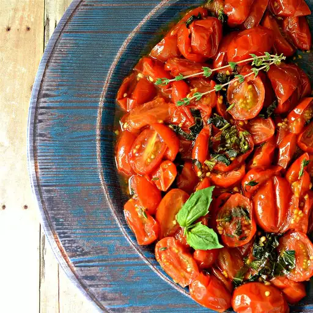

Roasted Grape Tomatoes Recipe

Roasted Grape Tomatoes
What is
A grape tomato is a class of tomatoes believed to be of southeast Asian origin, shaped similarly to the oval plum
tomatoes but having the small size and sweetness of cherry tomatoes. Grape tomatoes produce small and typically
oblong fruits. Introduced to the worldwide market in the 1990s, they have gained substantial popularity, due at
least in part to their higher sugar content compared to regular tomatoes, and due to their smaller, bite-sized
shape.
Ingredients
- 1 pound grape tomatoes, halved
- 1 tablespoon olive oil
- 2 cloves garlic, minced
- 5 fresh basil leaves, chopped
- 1 teaspoon chopped fresh thyme
- salt to taste
Steps
- Preheat the oven to 350 degrees F (175 degrees C).
- Place tomatoes onto a large square of aluminum foil. Drizzle olive oil over tomatoes and top with garlic,
basil, thyme, and salt. Wrap the foil around tomato mixture sealing tightly to keep juices inside.
- Bake in the preheated oven until tomatoes are tender, about 30 minutes. Cool slightly.